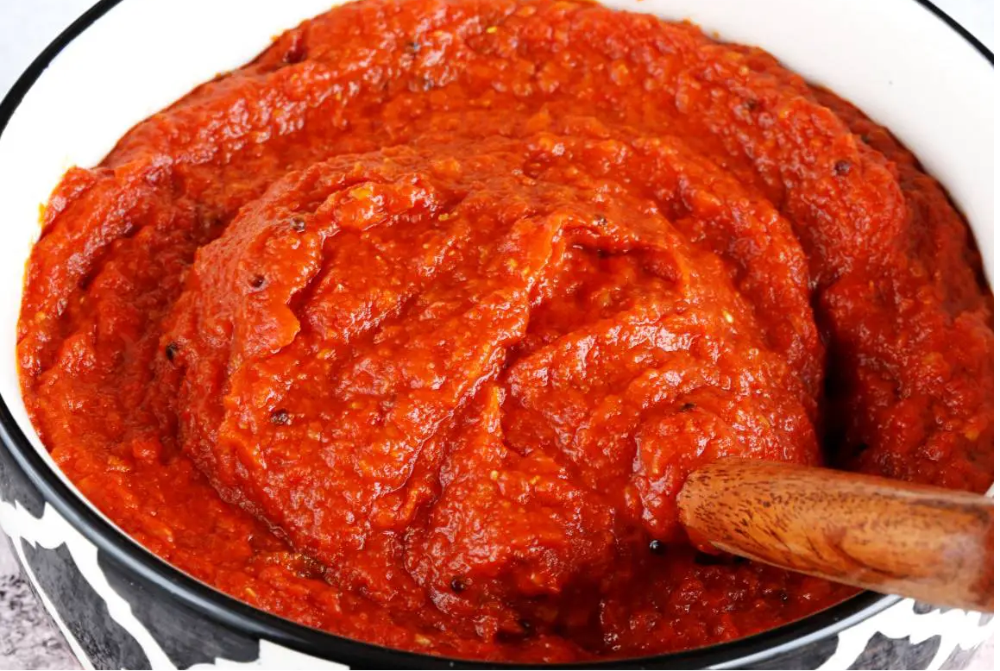

Tomato Chutney Recipe

Description
Tomato Chutney is a Chutney variety from Indian cuisine, made primarily with fresh ripe tomatoes. Various spices and fresh herbs are used to flavor up and balance the tang & sweetness of the ripe tomatoes.
Tomato Chutney is made in various regions of India so the preparations vary widely. Each family may have a different recipe made to suit their taste & liking. While there are sweet and spicy chutneys, this hot, tangy and spicy chutney belongs to South Indian cuisine & is a staple.
Ingredients
- 250 grams ripe tomatoes (2 to 3 tomatoes, ½ pound, refer notes)
- 2 to 3 small garlic (5 grams)
- ⅓ inch ginger (3 grams peeled ginger, optional, for flavor)
- 3 to 4 dried red chilies (5 grams, or ½ to ¾ teaspoon red chilli powder)
- ⅛ teaspoon turmeric
- ¼ teaspoon salt (adjust to taste)
- ½ teaspoon cumin seeds
- 1 to 1¼ tablespoons oil (divided ½ + ½ to ¾ to temper)
To Temper
- 1 sprig curry leaves
- ⅛ teaspoon mustard seeds
- 1 dried red chilli broken
- 1 to 2 small garlic cloves (crushed)
- ⅛ to ¼ teaspoon red chilli powder (optional, adjust to taste)
- 1 pinch hing (asafetida, optional)
STEPS
- Rinse the tomatoes well under running water and slice them.
- Heat oil and add cumin seeds. When the seeds splutter, add dried red chilies and fry them on a medium heat until crisp.
- Stir in the ginger (optional) and garlic. Fry them until they turn aromatic for about 1 minutes or a little longer. Don’t burn the ginger and garlic.
- Add the sliced tomatoes, salt and turmeric. On a medium high heat cook until the tomatoes turn completely mushy. Keep stirring in between to prevent burning.
- Turn off the stove when most of the juices have evaporated and the tomatoes develop a nice flavour.
How to Make Tomato Chutney
- Cool this completely and add to a grinder and blend to a smooth puree. Taste test and adjust salt as required.
- Wipe down the same pan with some kitchen tissues. Pour oil to the pan and heat it.
- Reduce the heat and add the mustard seeds, red chilies and garlic. Let the garlic turn fragrant and red chilies crisp. Then add the curry leaves and fry until crisp.
- Stir in the red chilli powder (optional, to make it more spicy) and quickly add the pureed tomato mixture.
- Mix well and saute for 1 to 2 mins. If you prefer to store this tomato chutney for longer, about 3 weeks, saute for another 2 to 3 mins until it turns really hot.
- Serve with breakfasts, snacks or even with plain rice. To preserve this for 3 to 4 weeks, cool it completely and transfer to clean dry glass jar. Refrigerate and scoop out only with dry spoons.